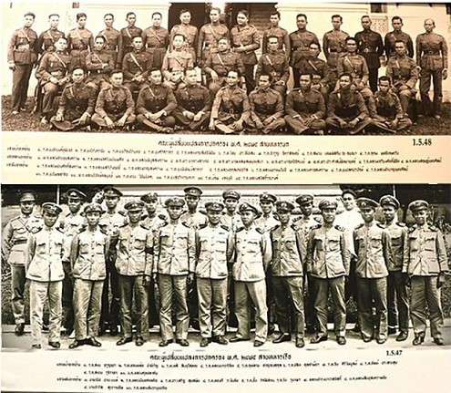
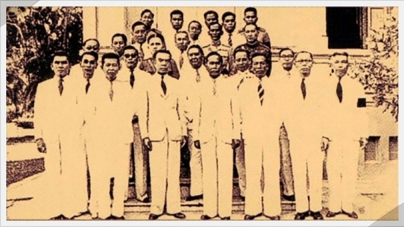
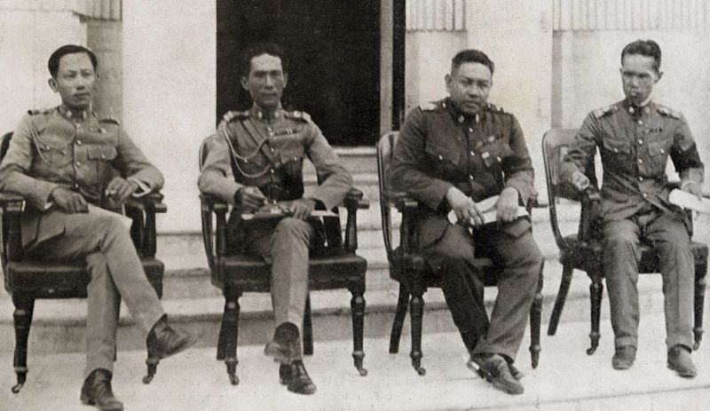

Before 2475 There is a group of exchange students that want to revolt Thai to be Democracy
So The Member of the groups there are
Military wing
Phraya Phahonphonphayuhasena (Phot Phahonyothin) - Head of the military wing; later became Prime Minister.
Phraya Songsuradet (Thep Phanthumsen) - Main strategist for the military coup.
Phraya Prasartphitthayayut (Wan Chuetin) - Important in military operations.
Phraya Ritthirongkanayut (Salaem Em-Asiri) - Military member of the group.
Luang Phibunsongkhram (Plaek Khittasangkha) - Later became Field Marshal Plaek Phibunsongkhram, Prime Minister. 
Image Source
Civilian wing
Luang Praditmanutham (Pridi Banomyong) - Head of the civilian wing, proposed the Economic Plan.
Luang Suphachalasai (Boonchana Atthakorn) - Civilian member involved in political activities.
Khuang Aphaiwong - Later became Prime Minister (though his role in 1932 was less prominent).

Image Source
Origins in France
In the 1920s, a group of young Siamese studied in Paris and other cities in France.
They were influenced by democracy, republicanism, socialism, and constitutional ideas.
Dissatisfied with Siam's absolute monarchy, they secretly organized a movement for political change.
This became the foundation of the 1932 revolution.
Key Members (French-educated group)
Pridi Banomyong (Luang Praditmanutham) - law student in France; later drafted the Economic Plan.
Plaek Khittasangkha (Luang Phibunsongkhram) - studied military science and artillery in France; later became Field Marshal and Prime Minister.
Phra Songsuradet (Thep Phanthumsen) - studied military engineering in France; main strategist of the coup.
Naval officers and other civil servants also joined after returning from Europe.
้้Their role
They were the “brains” of the revolution, bringing Western political ideas back to Siam.
They worked together with sympathetic military officers in Thailand to organize the coup.
On June 24, 1932, they successfully carried out a bloodless revolution, forcing the end of absolute monarch

Image Source
In conclusion, the exchange students in France were the origin and intellectual leaders of the Khana Ratsadon, providing the ideology, strategy, and organizational foundation for the 1932 revolution.